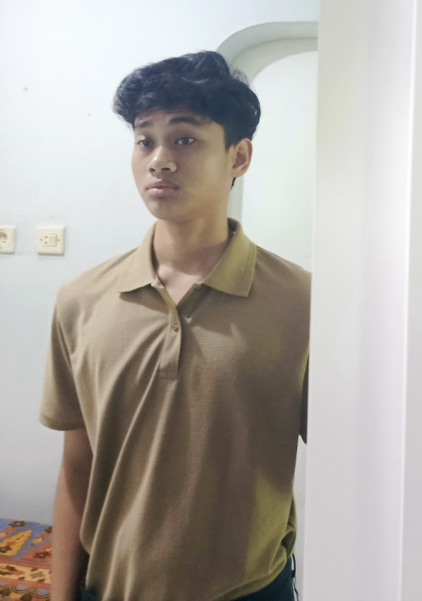

Jakarta, Indonesia | 0878-7091-2773 | zhafransuryananda12@gmail.com
Saya adalah seorang mahasiswa program sarjana (S1) di Telkom University Jakarta dengan konsentrasi pada bidang Sistem Informasi. Saat ini saya sedang menempuh pendidikan untuk memperdalam pemahaman mengenai pemanfaatan teknologi informasi, manajemen data, serta penerapan sistem informasi dalam berbagai aspek bisnis dan organisasi.